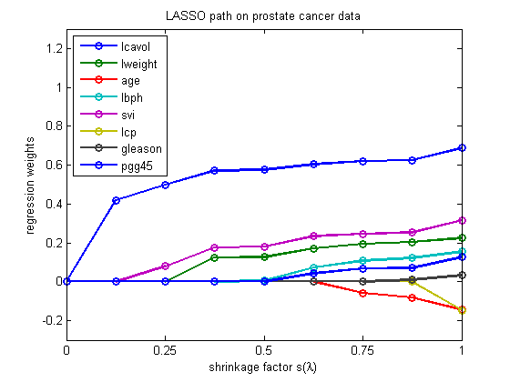

Plot the full L1 regularization path for the prostate data set
load prostate
w = lars(X, y, 'lasso')
lambdas = recoverLambdaFromLarsWeights(X, y, w);
figure;
plot(w, '-o','LineWidth', 2);
legend(names{1:size(X, 2)}, 'Location', 'NorthWest');
set(gca,'YLim', [-0.3, 1.3]);
title('LASSO path on prostate cancer data');
xlabel('shrinkage factor s(\lambda)');
ylabel('regression weights');
set(gca, 'XTick', 1:2:10);
set(gca, 'XTickLabel', {'0', '0.25', '0.5', '0.75','1'});
printPmtkFigure lassoPathProstate
w =
Columns 1 through 2
0 0
0.418954784807084 0
0.499172984842645 0
0.572357267313334 0.124541209523149
0.575228414620820 0.127272998279002
0.605159968179125 0.170770919320283
0.620706709684149 0.193698637160060
0.625378886038130 0.203851548704237
0.688304138311026 0.224532623152933
Columns 3 through 4
0 0
0 0
0 0
0 0
0 0.005180168752694
0 0.073548907218902
-0.057849051223036 0.108907585805141
-0.081907009404855 0.123002106313667
-0.145445735375162 0.154512522400050
Columns 5 through 6
0 0
0 0
0.080218200035561 0
0.176452368522013 0
0.181100610791444 0
0.233663045621593 0
0.247348334804133 0
0.253739314682478 0
0.315545418375720 -0.146716205626652
Columns 7 through 8
0 0
0 0
0 0
0 0
0 0
0 0.042302099114193
0 0.067641317211377
0.009004386691734 0.071618081515095
0.032425776970034 0.126972763403309
